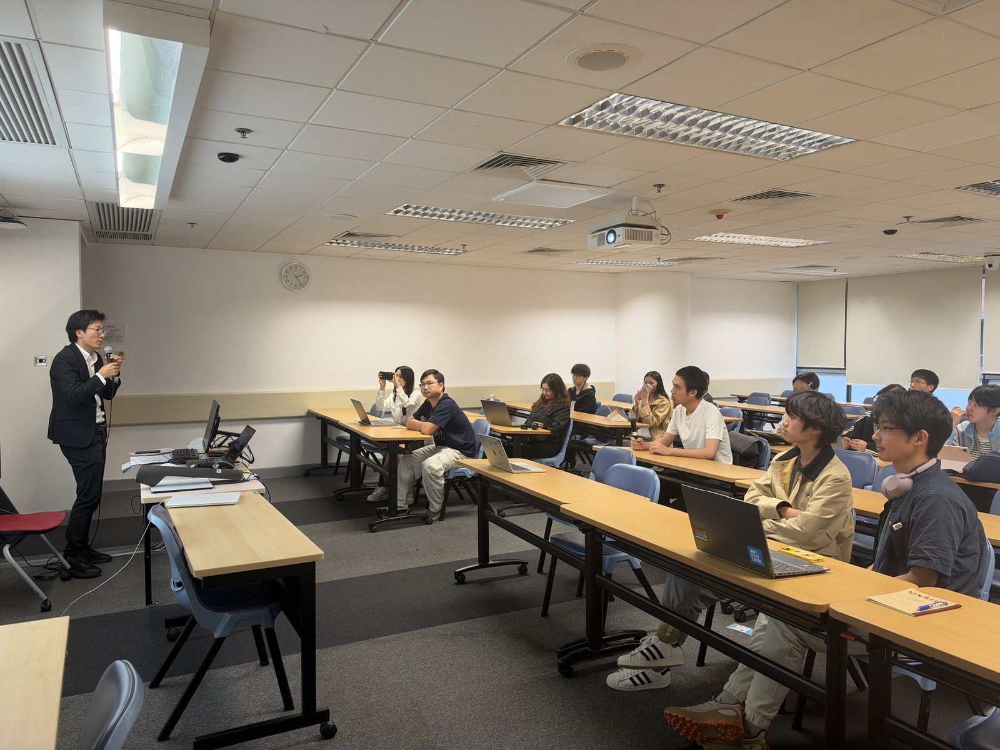
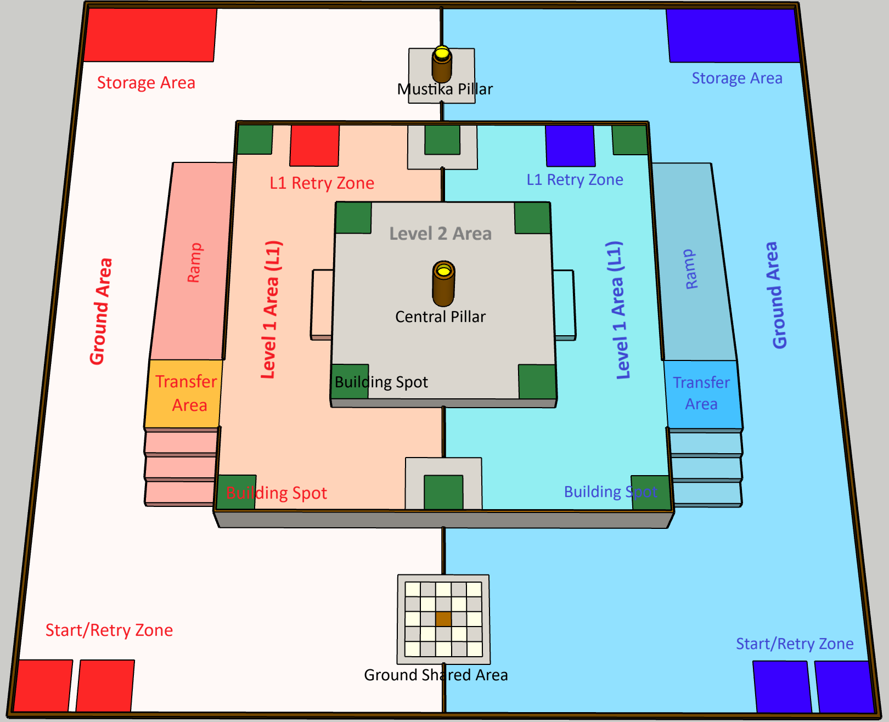
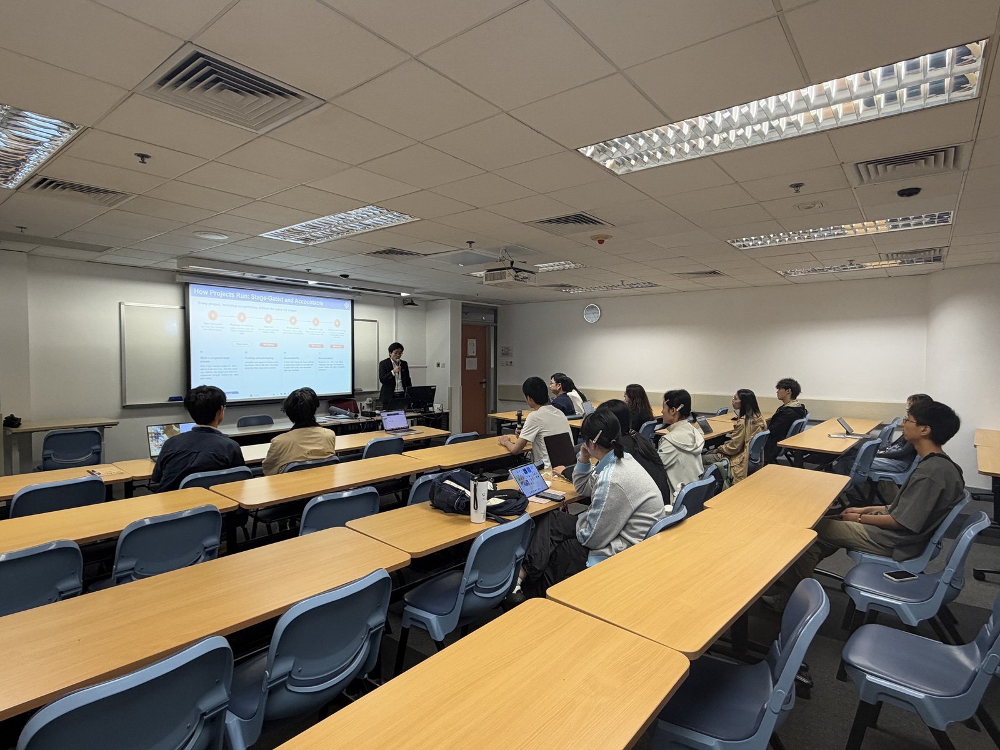
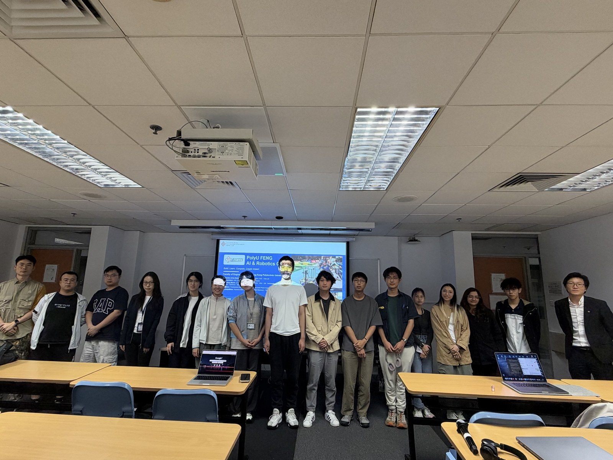

Prof. Weisong Wen briefs members on Robocon 2027 and club expectations
On 19 November 2026, Prof. Weisong Wen, Director of the PolyU FENG AI & Robotics Club, led a meeting with club members in Room R602. Using a slide presentation, he introduced the Robocon 2027 game and the club's preparation plan, and explained the standards members are expected to meet in training, teamwork, and project delivery.

Understanding the Robocon 2027 challenge
Prof. Wen introduced the 2027 theme, “The Pursuit of Mustika Nusantara”, through the game field, scoring system, and robot rules. Each team develops a Transporter Robot (TR), which may be manually controlled or autonomous, and a fully autonomous Builder Robot (BR). During a three-minute match, the robots transfer Earth Blocks and Sky Blocks, build towers on a three-level field, and work towards placing the Mustika on the central pillar.
The presentation connected these tasks to the engineering work ahead: climbing with a load, gripping and placing blocks accurately, localising on different field levels, and coordinating object handovers. These tasks require contributions from all four technical groups: Mechanical Design, Electronics & Embedded, Perception & Sensors, and Software & AI.

Two teams preparing for one PolyU entry
The preparation plan sets out two PolyU teams, each developing its own TR and BR with members from the four technical groups. An internal selection in April–May 2027 is planned to choose the team that represents PolyU at the Hong Kong contest. Selection considers match scores, reliability across repeated timed runs, safety and rules compliance, and design documentation.
The club's stated target is a top-three finish at the Robocon Hong Kong Contest 2027, supported by a goal of at least 80% success in timed full-field practice runs. After selection, the other team supports the representative team through testing and pit work, while both teams document their designs for the next cohort.
Commitment, safety and accountable project work
Prof. Wen also explained the club's three-tier membership structure and performance-based progression. Competition and project teams draw from Tier 1 and Tier 2 members. Members are expected to honour their agreed weekly time commitments, attend training, meet deadlines and take part in design reviews. Promotion depends on assessed technical skills, contributions, and project results.
The presentation stressed safety induction and signed club rules before practical work, advance booking of shared workbenches, machines, and the practice field, and cleaning up after use. It also set out the consequences of rule violations: a written warning and retraining for a first violation, removal for a second, and immediate removal for a serious breach.

Project teams are expected to submit a written proposal and budget, defend their plans, report progress every two weeks, and complete a mid-term review. Final delivery includes a working demonstration or competition entry, together with CAD files, code, a bill of materials, test records, and a complete handover. The presentation also outlined broader learning opportunities through a student-built robot dog and a student-proposed seed project.

Members can revisit the Robocon 2027 project, the membership and club rules, and the learning roadmap on the club website.